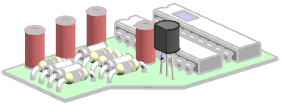
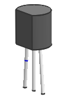

显示最高级别的装配
-
在装配导航器中，右击 des03_laser_t1_13节点并选择显示父项→des03_laser_test_assm_1。
由于您的保持复选框已经选中，组件将继续成为工作部件，您现在可以在关联装配中对这个组件工作。

-
右击 des03_laser_t1_13节点并选择设为显示部件。

-
在装配首选项对话框中，清除保持复选框并点击确定。
-
右击 des03_laser_t1_13节点并选择显示父项→des03_laser_test_assm_1。
由于您的保持复选框已清除，父项将成为显示部件与工作部件。

-
关闭所有部件。